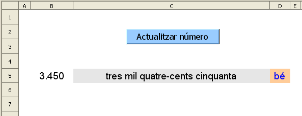

Presentació gràfica de l'activitat.

Funcions que es fan servir en aquesta activitat
Objectiu de l'activitat
Es tracta d'escriure amb lletra a la cel·la de color gris el número que hi ha a la cel·la B5. En fer clic a la macro, es presenta un nou número i s'esborra el que hi ha escrit a la cel·la C5. El número aleatori que hi ha a la cel·la B5 està entre el 0 i el 999.999.
Desenvolupament de l'activitat:
1. Obrir el fitxer M4 i afegir un nou full amb el nom de M4P3 escriure números amb lletra.
2. Escriure a la cel·la B5: =SI(A1=0;ALEATENTRE(0;999999))
3. Assignar els següents atributs a la cel·la C5:
tipus de lletra: arial
tipografia: normal
mida: 14
color de fons: taronja 4
4. Escriure a la cel·la F5: =B5
5. Escriure a la cel·la F4: =LONG(F5)
Amb la fórmula =LONG(F5) es compta el número de caràcters de la cel·la F5, que són el número de dígits del número que es mostra a la cel·la B5.
6. Escriure a la cel·la
H5:
=SI(F4<6;"";VALOR(MIG(F5;F4-5;1))).
La fórmula =SI(F4<6;"";VALOR(MIG(F5;F4-5;1))) significa el següent:
En cas que el valor de F4 sigui menor que 6, llavors el contingut de la cel·la serà buit; si no, extreu de la cel·la F5 el caràcter definit per la fórmula VALOR(MIG(F5;F4-5;1).
L'F5 és el text de qual s'han de determinar les paraules parcials (contingut de la cel·la F5).
L'F4-5 és la posició des de la qual s'ha de determinar la paraula inicial (que en realitat és un número). En cas que el número que apareix a la cel·la F4 sigui el 6, llavors F4 menys 5 serà 1 per la qual cosa la posició d'inici serà el primer caràcter començant per l'esquerra.
L'1 és el nombre de caràcters que cal extreure partint de la posició inicial F4-5. En cas que el número que apareix a la cel·la F4 sigui el 6, s'extrauria el valor de la centena de miler.
VALOR converteix el text en un número.
7. Escriure a la cel·la
I5:
=SI(F4<5;"";VALOR(MIG(F5;F4-4;1)))
8. Escriure a la cel·la
J5:
=SI(F4<4;"";VALOR(MIG(F5;F4-3;1)))
9. Escriure a la cel·la
K5:
=SI(F4<3;"";VALOR(MIG(F5;F4-2;1)))
10. Escriure a la cel·la
L5:
=SI(F4<2;"";VALOR(MIG(F5;F4-1;1)))
11. Escriure a la cel·la
M5:
=VALOR(MIG(F5;F4;1))
Els passos 7, 8, 9, 10 i 11 segueixen la mateixa dinàmica que l'explicat en la nota del pas 6.
Amb el passos del 6 a l'11 s'obté la unitat (M5), la desena (L5), la centena (k5), la unitat de miler (J5), la desena de milers (I5) i la centena de miler del número que hi ha a la cel·la B10
12. Escriure a la cel·la
I6:
=SI(I(I5="";J5="");"";VALOR(I5&J5))
13. Connectar les cel·les
I6 i J6
14. Escriure al rang de les ce·les
H10:H18 els números del
1 al
9
15. Escriure en lletra al rang de les cel·les
I10:I18 el següent:
I10: cent
I11: dos-cents
I12: tres-cents
I13: quatre-cents
I14: cinc-cents
I15: sis-cents
I16: set-cents
I17: vuit-cents
I18: nou-cents
16. Escriure al rang de les cel·les J10:J109 els números de 0 al 99
17. Escriure al rang de les cel·les K9:k109 els números amb lletra corresponents al rang J10:J109
18. Escriure a la cel·la H7: =SI(H5=””;””;CONSULTA(H5;H9:H18;I9:I18))
Amb aquesta fórmula si H5 mostra algun valor, s’obté la centena de miler fent-se la corresponent consulta; si no, no mostra cap valor.
19. Escriure a la cel·la I7:
=SI(I6="";"";SI(I6=1;"un mil";SI(I6=0;" mil";CONSULTA(I6;J9:J109;K9:K109)&" mil")))
Amb aquesta fórmula si la cel·la I6 mostra el valor de 1, retorna la paraula “mil”; si és un valor diferent de 1, es fa la corresponent consulta concatenant la paraula mil. Observar l’espai que hi ha abans de la lletra m de ” mil”.
20. Escriure a la cel·la
k7: =SI(K5="";"";SI(K5=0;"";CONSULTA(K5;H9:H18;I9:I18)))
21. Escriure a la cel·la
L6:
=VALOR(L5&M5)
22. Connectar les cel·les
L6 i
M6.
D’aquesta manera s’obté un número que representa la desena o la unitat del
número que hi ha a la cel·la B5
23. Escriure a la cel·la
L7:
=SI(I(L5=0;M5=0);"";SI(VALOR(H5&I5&J5&K5&L5&M5)=0;"zero";CONSULTA(L6;J10:
J109;K10:K109)))
Amb SI(I(L5=0;M5=0) s'aconsegueix que es retorni l'expressió de “X cents” sempre que la X sigui major que 1 o l'expressió “cent” en cas que la X sigui 1.
24. Escriure a la cel·la
G5:
=RETALLA(H7&” ”&I7&” ”&K7&” ”&L7)
La funció RETALLA elimina del text els espais extres. D’aquesta manera s’obté en lletra el número que apareix a la cel·la B5.
El passos que venen a continuació, del
25 al
29, serveixen per a donar opció a escriure els números en masculí o en femení.
25. Escriure a la cel·la
G6:
=SUBSTITUEIX(G5;"cents";"centes")
26. Escriure a la cel·la
G7:
=SUBSTITUEIX(G6;"dos";"dues")
27. Escriure a la cel·la
G8:
=SUBSTITUEIX(G7;"un";"una")
28. Escriure a la cel·la
G9:
=SUBSTITUEIX(G5;"un";"u")
29. Escriure a la cel·la
D5:
=SI(C5="";"";SI(O(C5=G5;C5=G8;C5=G9);"bé";"no"))
Amb aquesta fórmula s’avalua l’escrit a la cel·la C5 si aquesta mostra algun valor. Si el que s’ha escrit a la cel·la C5 és igual a qualsevol de les cel·les G5, G8 o G9, llavors apareix l’avaluador “bé”; si no, apareix el “no”.
30. Fer una macro amb les següent funcions:
• Esborrar el contingut de la cel·la
C5
• Assignar a la cel·la
A1 el valor de
0
• Que la cel·la
C5 rebi el focus.
31. Crear un botó (comandament) de Controls de formulari i assignar-li la macro feta anteriorment.
32. Validar la cel·la
A1 per al valor
0.
33. Protegir les cel·les que convingui.
34. Fer no visibles les cel·les que convingui.
35. Comprovar que l’activitat funcioni correctament.
36. Desar el fitxer
M4.